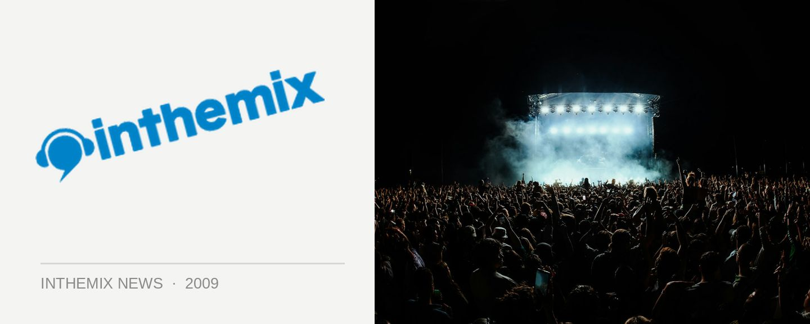

Proteus tours for the Masif crew
Masif had already recruited the talents of hard dance heavyweight Alex Kidd for the first installment of their Hard Dance Icons series, and they’re back with another big gun for part 2… Finland’s Proteus has taken the reigns on the new double CD that’s just hit the shelves, capturing the heaviest moments from his recent club sets across Europe. He’ll be backing it up with an extensive tour across the country…
Proteus tour dates:
Fri May 22nd – Pharmacy, Melbourne
Fri June 13th – Masif, Hobart
Fri June 20th – Family, Brisbane
Sat June 21th – Masif, Metro, Sydney
Fri June 27th – Masif, Perth
Sat June 28th – Earth, Adelaide